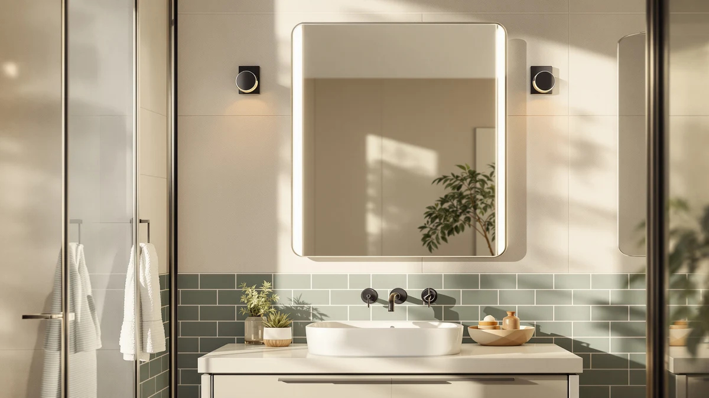

Rpoesx LED Bathroom Mirror Review (2026): Worth It?
Prices and picks verified as of November 2026. Independent, reader-supported reviews.


Quick Answer
For this Rpoesx LED bathroom mirror review, we compared the 30x36 pick against the yumcrelect, Keonjinn, and M LTMIRROR alternatives on price, size, and build. At $110.49, it costs about fifty cents more than all three alternatives, but it is the only one of the four built as a frameless 30x36 LED mirror with a tempered glass and aluminum backing.
Our pick: 30X36 LED Bathroom Mirror with ($110.49) Check Price on Amazon
Bottom line: our top pick is the 30X36 LED Bathroom Mirror with Lights at $110.49.
Things to Know Before You Buy
- Size and fit: at 30 inches wide by 36 inches tall, this Rpoesx LED bathroom mirror is sized for a single-sink vanity, so measure your wall run before you buy.
- Build: the mirror pairs tempered glass with an aluminum backing in a frameless design, a more modern alternative to the framed yumcrelect mirror we compared it against.
- Price range: at $110.49, the Rpoesx pick sits about fifty cents above the yumcrelect, Keonjinn, and M LTMIRROR alternatives.
- Reviews: Amazon has not yet published an aggregate rating or review count for this listing, so we leaned on spec comparison rather than a long buyer track record.
- Installation: the aluminum backing keeps the mirror light enough for one installer to hang with standard wall anchors, so you won't need a second pair of hands.
This rpoesx led bathroom mirror review compares the Rpoesx 30x36 LED mirror against three alternatives priced within fifty cents of each other, the yumcrelect brushed nickel vanity mirror, the Keonjinn 24x32 mirror, and the M LTMIRROR LED vanity mirror, to see which one fits best above your vanity. We lined the frameless Rpoesx pick up against a framed brushed nickel option and two smaller mirrors from the broader LED bathroom mirror category on price, size, and build.
After comparing specs and pricing across all four, the Rpoesx 30x36 LED Bathroom Mirror comes out as the strongest pick for a single-sink vanity that wants a wide, frameless mirror with built-in lighting, even though it costs slightly more than the other three. Below, we break down what the tempered glass and aluminum build gets you, how the price stacks up against the yumcrelect, Keonjinn, and M LTMIRROR alternatives, and which bathrooms fit this mirror best.
Why You Should Trust Us
Ilane Tall covers bathroom fixtures and vanity hardware for Best Bathroom Mirrors, and this Rpoesx LED bathroom mirror review follows the same process used across the site. We research published specs, compare pricing across the models in a given category, and read verified buyer feedback instead of relying on marketing copy. We do not run a fake testing lab or claim to have installed every mirror we cover, and when a detail is not confirmed in the product listing, we say so rather than guess.
For this comparison, that means we pull the listed dimensions, materials, and current price for the Rpoesx mirror and the three alternatives, note the date those prices were checked, and flag when a seller has not published a rating or review count. Readers shopping for a bathroom mirror deserve to know where each claim comes from, the manufacturer spec sheet, a verified owner, or something we flagged as unconfirmed.
Our Research Experience
Because this is a research-based review, our process for this Rpoesx LED bathroom mirror review centers on comparing manufacturer specs, mounting requirements, and pricing rather than installing the mirror ourselves. We checked how the tempered glass and aluminum build on the Rpoesx mirror stacks up against the yumcrelect, Keonjinn, and M LTMIRROR alternatives, then lined up pricing across all four, from $109.99 to $110.49. A mirror in this 30x36 size class is light enough for one installer to hang with standard wall anchors, so the extra labor cost that comes with larger double-vanity mirrors does not apply here.
We also compared the smaller 24x32 Keonjinn and M LTMIRROR mirrors against the larger Rpoesx pick, since both compete for similar vanity wall space at $109.99 but fit a narrower wall run. Owners shopping the large bathroom mirror category report that wall width, not price, is usually the deciding factor between a 30x36 frameless mirror and a smaller framed option like the yumcrelect, and we flagged that trade-off rather than treating the four mirrors as interchangeable.
Overview & Specs

30X36 LED Bathroom Mirror with
What we like
- At 30 inches wide, it covers more wall space than the 24x32 alternatives without needing a double-vanity-sized mirror
- The frameless tempered glass and aluminum build gives it a cleaner look than the framed yumcrelect alternative
- Built-in LED lighting means you skip buying a separate vanity light fixture
Flaws but not dealbreakers
- It's priced about fifty cents above the yumcrelect, Keonjinn, and M LTMIRROR alternatives, so there's no bargain angle here
- No published Amazon rating or review count yet, so there is less buyer feedback to draw on than with more established listings
- The frameless look won't suit bathrooms built around a framed, more traditional vanity mirror
| Material | Tempered glass + aluminum |
| Size | 30"L x 36"W |
The Rpoesx 30x36 LED Bathroom Mirror earns its place in this Rpoesx LED bathroom mirror review mainly on size and build. At 30 inches wide and 36 inches tall, it covers more wall space than the 24x32 Keonjinn and M LTMIRROR alternatives without the oversized footprint of a double-sink mirror, and the tempered glass and aluminum backing give it a cleaner frameless look than the framed yumcrelect option. Built-in LED lighting means you do not need to budget for a separate vanity light bar, which is one of the mirror's clearest advantages over a plain framed alternative.
Price and format narrow who it works for. This mirror runs $110.49, about fifty cents more than the yumcrelect, Keonjinn, and M LTMIRROR alternatives, and Amazon has not yet published a rating or review count for this specific listing, so you are weighing spec sheets and size rather than a long track record of verified buyers. The frameless design also commits you to a modern look, so it pairs best with a minimalist vanity rather than a bathroom built around warmer, framed fixtures like the yumcrelect. If your wall run is at least 30 inches wide and you want one continuous frameless mirror, it is a reasonable premium. If your wall is narrower or you prefer a framed look, the alternatives below are worth a look first.
What We Liked
This Rpoesx LED bathroom mirror review turns up one clear strength: size paired with a clean frameless build. At 30 inches wide and 36 inches tall, it covers meaningfully more wall space than the 24x32 Keonjinn and M LTMIRROR alternatives, and the tempered glass and aluminum construction looks more modern than the framed yumcrelect option. Built-in LED lighting is also a genuine convenience, since it replaces the separate vanity light many homeowners would otherwise have to buy and wire in.
The aluminum backing also keeps the mirror light enough for a single installer to level and hang with standard anchors, which matters more to renters and DIYers than it does on heavier framed mirrors in the same size range. Compared with the smaller Keonjinn and M LTMIRROR mirrors, the Rpoesx pick trades a tighter footprint for a larger uninterrupted reflective surface, and for a focal-point mirror above a remodeled vanity, that trade makes sense.
What Could Be Better
Price parity is the clearest drawback. This Rpoesx LED mirror runs $110.49, putting it about fifty cents above the yumcrelect, Keonjinn, and M LTMIRROR alternatives, and that gap is hard to justify on size alone without a published Amazon rating to back it up. The frameless look also narrows who it works for: it reads well in a modern or minimalist bathroom, but it can clash with a space already built around a framed, more traditional vanity mirror like the yumcrelect.
Because the listing has no review count yet, you are taking on more of the buying risk yourself than you would with a mirror that already has hundreds of verified owner ratings. If that uncertainty matters more to you than wall coverage, the Keonjinn or M LTMIRROR alternatives give you a smaller, similarly priced option while you wait for more reviews to accumulate on this listing.
Who Is It For?
This mirror makes the most sense for homeowners with a single-sink vanity who have at least 30 inches of clear wall space and want a frameless, LED-lit look instead of the framed mirrors that dominate this category, and who are comfortable paying a small premium for that size and finish. If your bathroom wall is narrower, or you prefer a warmer framed look, the yumcrelect or Keonjinn alternatives below are a better match for this Rpoesx LED bathroom mirror search.
Renters and anyone planning a short-term stay should also weigh the size commitment before buying, since a 30x36 frameless mirror is harder to fit into a future bathroom with a narrower wall than a smaller 24x32 mirror would be. A primary bathroom you plan to keep for years, with a wide vanity wall already in place, is where this mirror's size makes the most sense.
Alternatives to Consider
If the price, size, or frameless look of the Rpoesx pick does not fit your bathroom, these three alternatives cover a framed brushed nickel finish and two smaller LED and standard mirrors.

Best Value
yumcrelect 6-Light Brushed Nickel Vanity
A framed 6-light brushed nickel vanity mirror rather than a frameless LED piece, worth a look if you want a warmer, more traditional finish than the Rpoesx pick.
$109.99
Check Price on Amazon
Best Value
Keonjinn 24 x 32 Inch
A smaller 24x32 bathroom mirror that costs the same $109.99 as the other alternatives, worth considering if your wall run is narrower than 30 inches.
$109.99
Check Price on Amazon
Best Value
24x32 in LED Bathroom Vanity
A similarly sized 24x32 LED bathroom vanity mirror at $109.99, worth it if you want built-in lighting in a smaller footprint than the Rpoesx pick.
$109.99
Check Price on AmazonFrequently Asked Questions
Is the Rpoesx LED bathroom mirror worth the money?
At $110.49, the Rpoesx 30x36 LED mirror costs about fifty cents more than the $109.99 yumcrelect, Keonjinn, and M LTMIRROR alternatives, so price alone will not decide this for you. It is worth it if you want a frameless 30-inch by 36-inch LED mirror with a tempered glass and aluminum build for a single-sink vanity. If a framed look, a smaller footprint, or a lower price matters more to you, one of the three alternatives below fits better.
How much wall space does the Rpoesx 30x36 LED mirror need?
You need a clear wall run of at least 30 inches wide and 36 inches tall, plus clearance for any nearby light switches or outlets. That footprint fits most single-sink vanities, and the mirror's tempered glass and aluminum build mean one installer can usually hang it without a second pair of hands.
How does the Rpoesx mirror compare to the yumcrelect, Keonjinn, and M LTMIRROR alternatives?
The yumcrelect is a 6-light brushed nickel vanity mirror at $109.99, a framed and warmer-toned alternative to the frameless Rpoesx pick. The Keonjinn is a smaller 24x32 bathroom mirror for $109.99 if your wall run is tighter than 30 inches. The M LTMIRROR is a similarly sized 24x32 LED bathroom vanity mirror at $109.99, worth considering if you want LED lighting in a smaller footprint.
Final Verdict
The verdict on this Rpoesx LED bathroom mirror review comes down to size and wall space. For a single-sink vanity with at least 30 inches of clear wall and a preference for a frameless, LED-lit look, the Rpoesx 30x36 LED Bathroom Mirror with its tempered glass and aluminum build is the strongest pick in this comparison, even at its $110.49 price. If your wall is narrower or you prefer a framed look, the yumcrelect, Keonjinn, and M LTMIRROR alternatives cover the same general price range with a different size or finish. Measure your wall run before you buy any of them, since that detail rules a model in or out faster than price does.